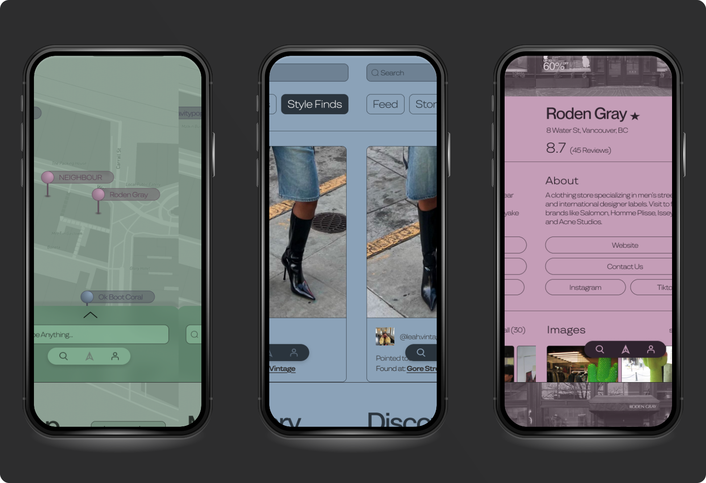
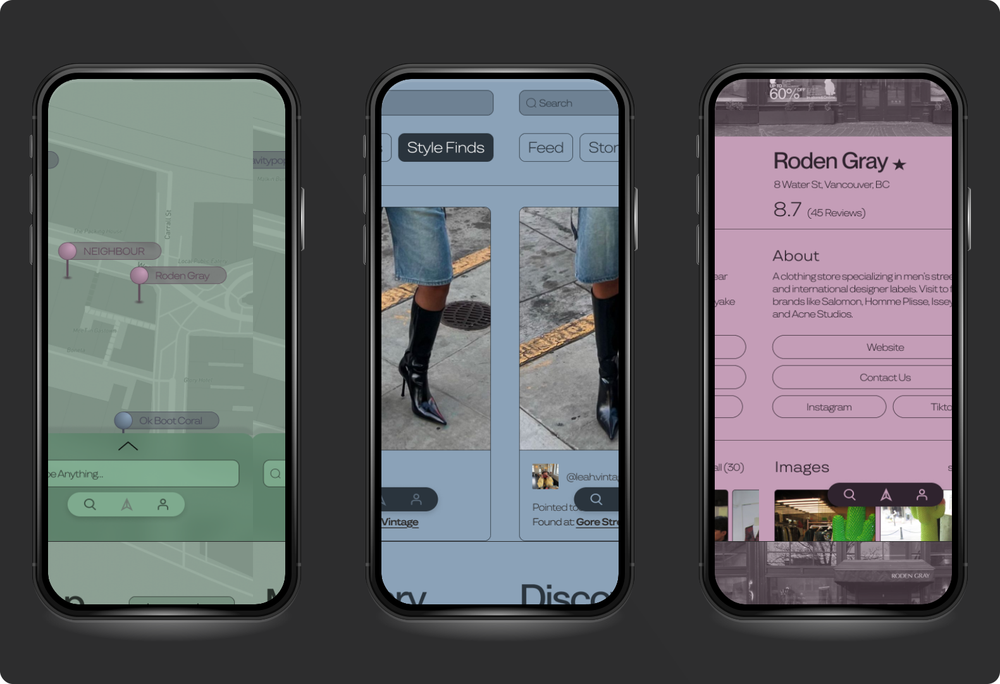

Identifying Gaps within Dominant Platforms
Looking into our direct competition,
I discovered major shortcomings.
Pinterest offers an innovative ‘Shop the Look’ feature, but the curated items often don’t match the products shown in the photos.


Users often get broad results with limited relevance to niche fashion interests, requiring extra effort to find hidden gems.
Larger or chain stores tend to appear more prominently, overshadowing small, independent boutiques.
 
